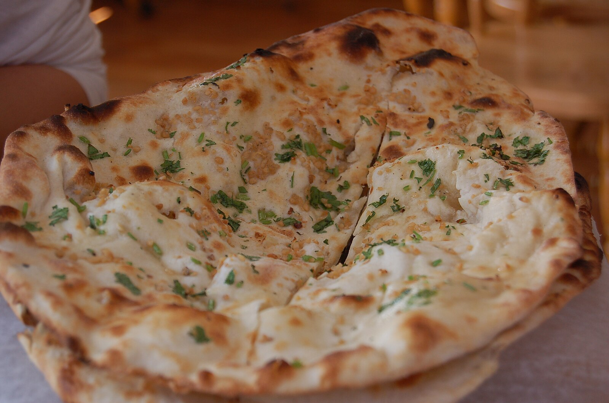

Naan

Description
Naan is a type of leavened, oven-baked flatbread that is popular in South Asian cuisine, particularly in India, Pakistan, and surrounding regions.
It is traditionally cooked in a tandoor, a cylindrical clay or metal oven that can reach high temperatures.
Naan is known for its soft, pillowy texture and slightly charred, crispy edges. It is often served as a side dish to accompany various curries, stews, and grilled meats.
Ingredients
- 2 teaspoons active dry yeast
- 1 teaspoon sugar
- ¾ cup warm water (about 110°F)
- 2 cups all-purpose flour
- ½ teaspoon salt
- ⅓ cup plain yogurt
- 2 tablespoons vegetable oil or melted butter, plus more for brushing
Steps
- In a small bowl, combine the yeast, sugar, and warm water. Let it sit for about 5-10 minutes until it becomes frothy.
- In a large mixing bowl, combine the flour and salt. Add the yogurt and the yeast mixture. Mix until a dough forms.
- Knead the dough on a floured surface for about 5-7 minutes until it becomes smooth and elastic. Place the dough in a lightly oiled bowl, cover it with a damp cloth, and let it rise in a warm place for about 1-2 hours or until it doubles in size.
- Preheat a skillet or griddle over medium-high heat. Punch down the dough and divide it into 6-8 equal portions. Roll each portion into a ball and then flatten it into an oval or teardrop shape, about ¼ inch thick.
- Place the rolled-out dough onto the hot skillet. Cook for about 1-2 minutes on one side until bubbles form and the bottom is golden brown. Flip it over and cook for another 1-2 minutes until the other side is also golden brown. Repeat with the remaining dough.
- Brush the cooked naan with melted butter or oil while it's still warm. Serve immediately with your favorite curries or dishes.